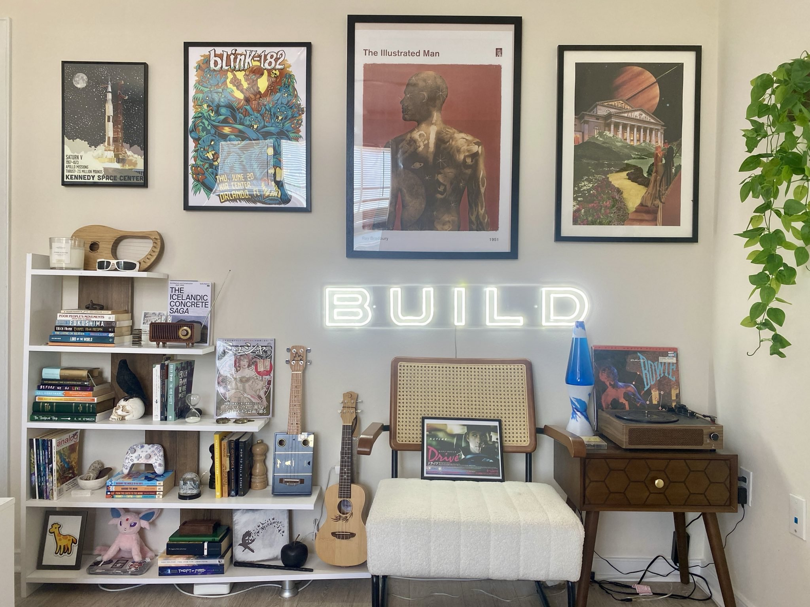
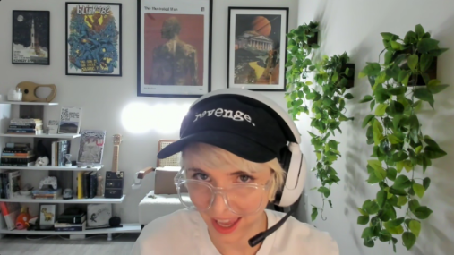
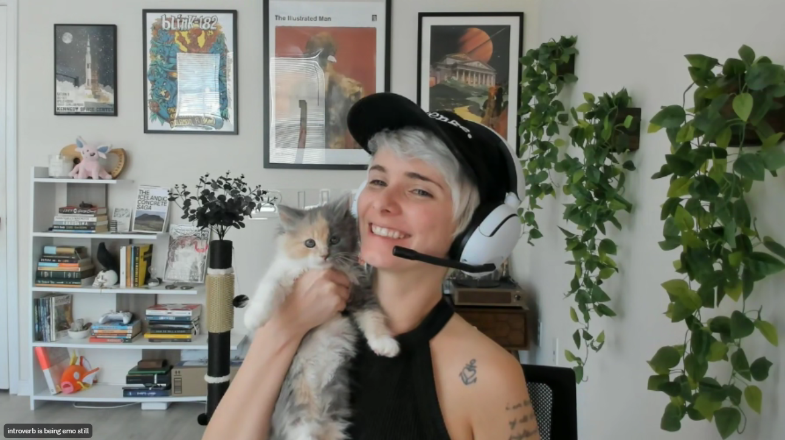
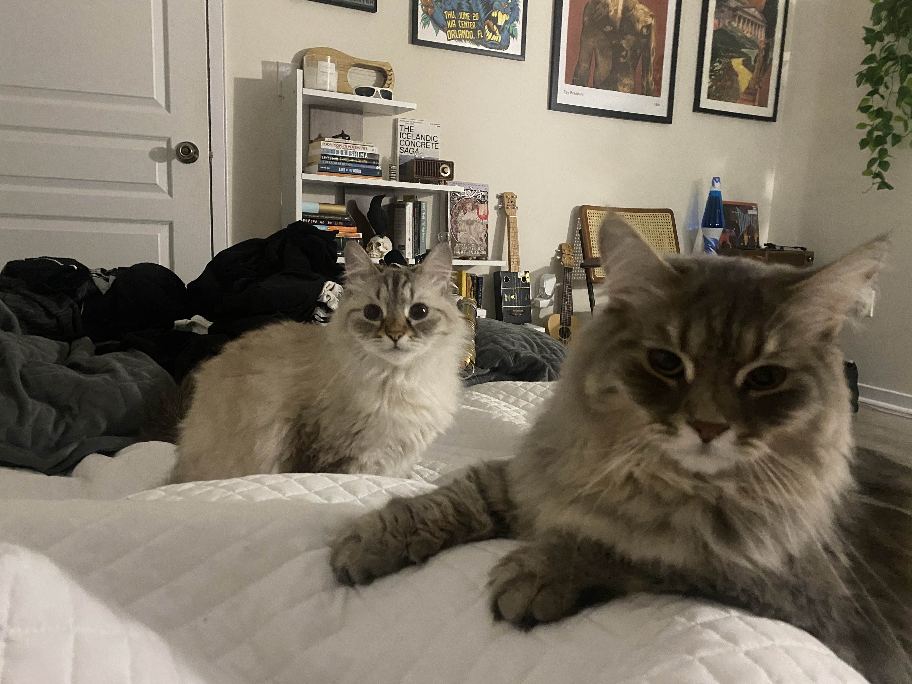
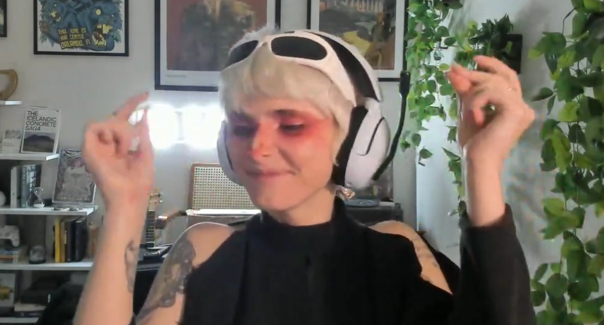

A Nice Space
for Myself
Spaces & Psychology
Maintaining hope while depressed and terminally online
Atomization → Isolation → Insulation → Loss of inspiration → Loss of connection →
Loss of sense of reality…
Debilitating anxiety and depression.
I designed this space when I had no in-person connection, was suffering from acute panic attacks daily, was terminally online, and was struggling to get any of my projects off the ground.
Sometimes we can’t control where geographically we live, or what resources we have immediately available to us. But I found that taking actions to make my own local environment the type of place that inspires and supports me helped me to maintain hope and orient toward a more positive future for myself. I didn’t make it comfortable or cozy, I didn’t let it support the complacency that was threatening to consume me. I made it a challenge to myself, staring me in the face every minute that I was in that room, on my PC, drinking wine or smoking weed or gaming — when I looked around me, I was reminded. It helped me look outside of the small space I felt crammed into, and imagine what was possible. It set me up to go for those things.
I don’t live there anymore. It was never permanent. But it helped me survive there, while I worked to get to where I’m at now.




